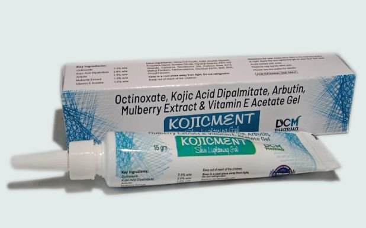

Indications:- Skin lightening gel
- 
Octinoxate & Combination Gel

Octinoxate & Combination Gel
GEL PRESENTATION:
Octinoxate 7.5% w/w
Kojic Acid 2.0% w/w
Arbutin 1.5% w/w
Mulberry extract 1.0% w/w
Vitamin E 1.0% w/w
Skin lightening gel is designed to lighten skin color. They work by decreasing the amount of melanin, which is a pigment produced by skin cells and determines how light or dark our skin appears. Kojicment gel is indicated for melisma/hyperpigmentation. It is used to lighten skin tone and improve complexion and protect the skin against harmful UV rays. It penetrates through the skin and oxidizes the melanocytes thereby lightens the complexion of the skin.
Our Skin Lightening gel is specially formulated to provide an even skin tone. Enriched with kojic acid, it nourishes the skin and keeps it soft and healthy. It not only controls melanin production but also provides radiance to the skin. It also protects the skin from sun damage and tanning. Kojicment gel is the safest way to lighten the skin tone. It contains Octinoxate, Kojic acid dipalmitate, Arbutin, Mulberry extract, Vitamin E within built sunscreen. These entire constituents act together to block melanin pigments and help in skin-lightening effects.

- Lightens Skin
- Premature Aging
- Glowing and youthful skin
- Sunscreen protection
- All type hyper–pigmented skin
- Removes extra melanin
- Moisturize skin
BENEFITS:
- Lightens your skin tone by reducing uneven pigmentation
- Stimulates skin renewal and helps lighten spots, blemishes
- Protects from harmful UV rays and improves skin tone
- Aids in reducing the the appearance of skin discolorations which includes freckles, age spots, fine lines, wrinkles, and dark spots
- Helps in controlling melanin production and hydrates and moisturizes the skin
DIRECTION FOR USE:
- Rinse the skin with lukewarm water and pat dry
- Apply the skin whitening cream on your face and neck
- The best to use fingertips to apply the cream in a circular motion then rub gently till the cream absorbs into the skin
- Apply twice a day to get radiant and brighter skin
SAFETY ADVICE:
- Read the label carefully before use
- Keep away from children
- For external use only
- Avoid contact with eyes
- Store in a cool, dry, and dark place
Disclaimer:The data uploaded is made from content already available on internet.The company holds no right of it and is not responsible for any wrong information.